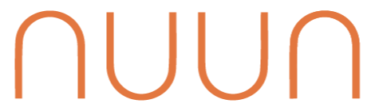
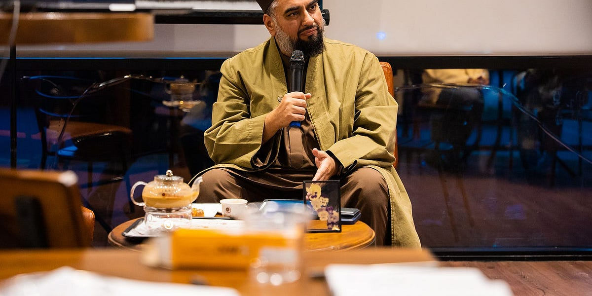

Events
Speaker conversations, prompts, silent writing, and discussion.

Dallas / Muslim Public Life / 2026
Nuun Collective brings Muslims into serious rooms for conversation, writing, media, and action.
The Mission
“Nūn. By the Pen, and what they inscribe, you are not [O Muhammad], by the grace of your Lord, a madman. And yours shall be an unfailing reward. And you indeed are of tremendous character.”Qur’an, Surah Al-Qalam 1–4
Nuun Collective builds a culture of thinkers who lead, builders who change, and collaborators driven by purpose. Through talks, events, and writing sessions, we move critical thought toward meaningful action.
Speaker conversations, prompts, silent writing, and discussion.
Essays, transcripts, reflections, and published thought.
Videos, audio, and transcripts that keep the conversation moving.
Nuun exists to interrupt that loop by making serious thinking, writing, and action feel communal, beautiful, and urgent.
When questions become taboo, thought becomes defensive instead of alive.
Communities name urgent problems, then fail to build habits of response.
Energy exists, but it is scattered across rooms that rarely meet.
Public life needs shared references, language, and intellectual diet.

What is Nuun?
Narratives script human behavior the way code scripts computers. From conversation to action.Nuun's public record lives across transcripts, videos, essays, and conversations. This section should feel like a desk of open source material, not a list of links.
Nuun began as a local gathering of Muslims in Dallas asking what it would take to build a serious culture of thought, writing, and action. The work starts here, but the questions are larger than one city.
11 / Support
Nuun is completely bootstrapped. Everything so far has been funded by selling notebooks, merch, and putting in our own personal money.
Secure donations powered by CharityStack.